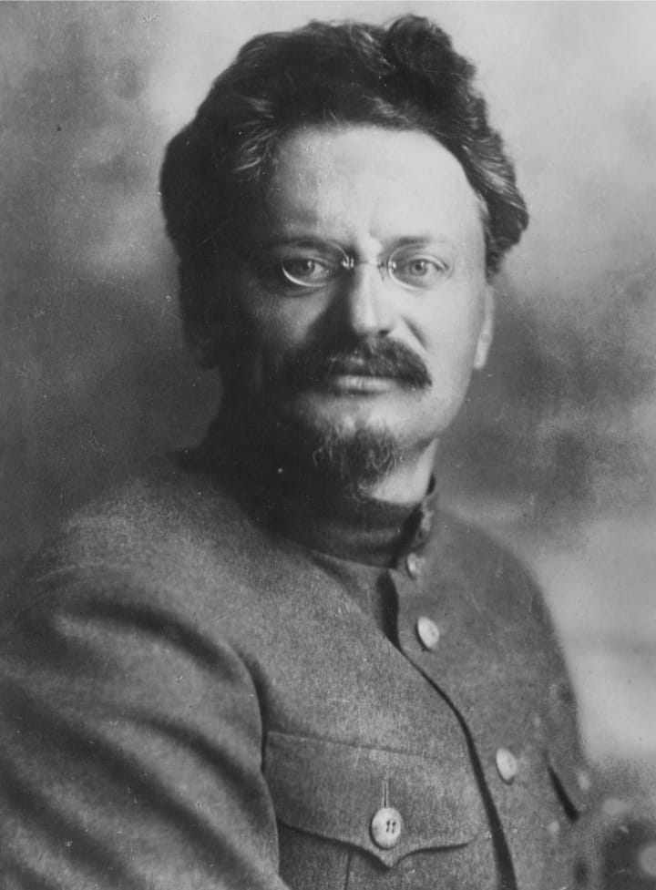
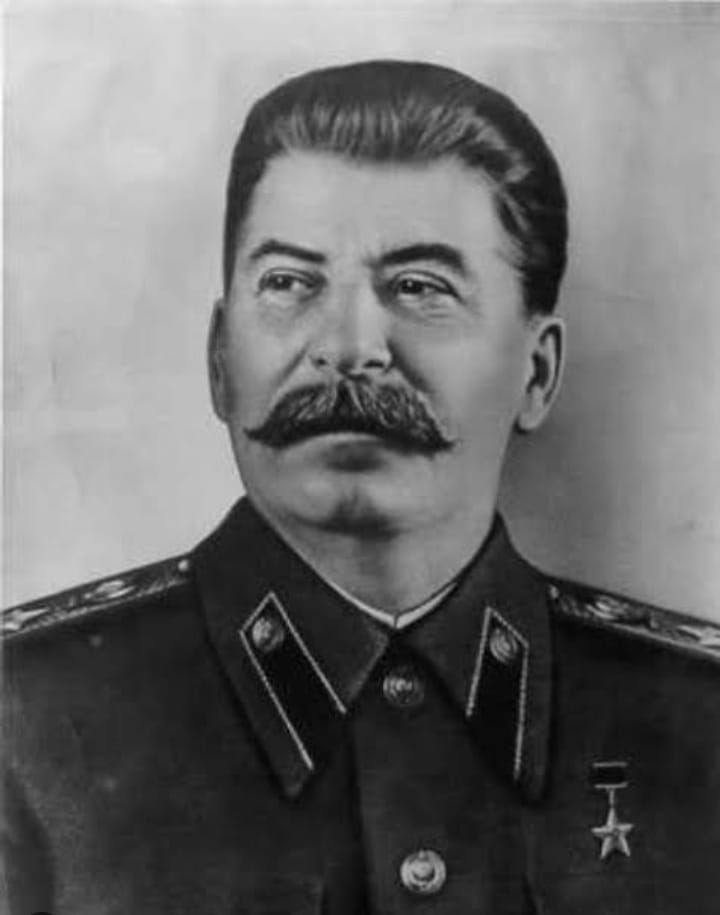
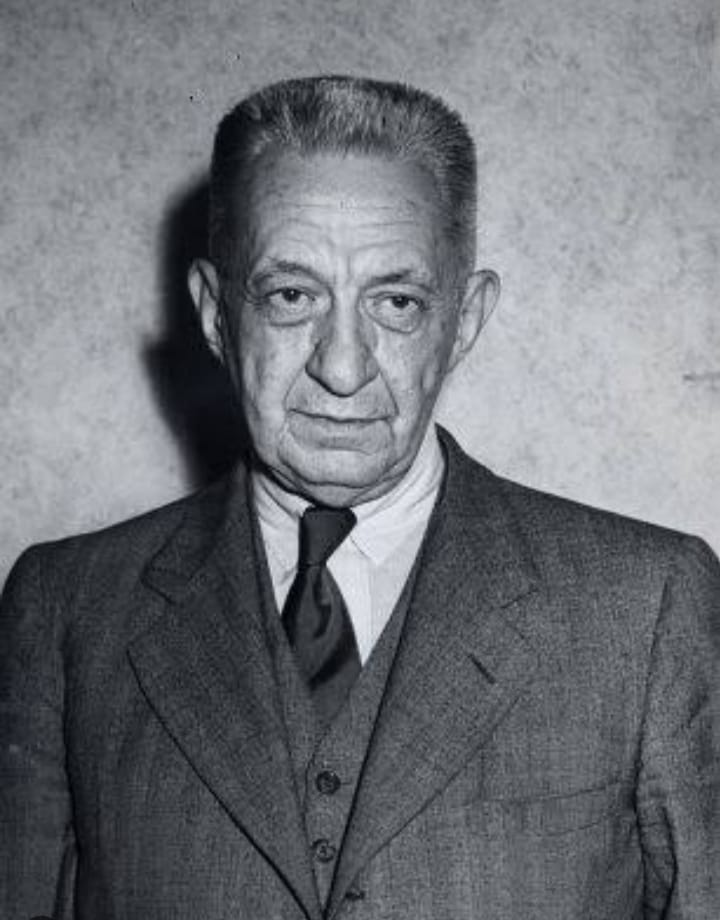
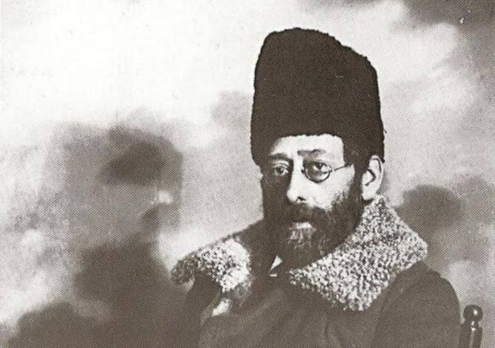

Vladimir Llyich Ulianov:

Vladimir Llyich Ulianov (ou apenas Vladimir Lênin) ficou marcado na história por ser um revolucionário russo, defensor de ideais marxistas e um dos líderes da Revolução de Outubro, também conhecida como Revolução Russa. Ele aderiu ao marxismo durante sua juventude, influenciado pelos debates dessa teoria nos meios universitários e por seu irmão mais velho..
Como primeiro líder da URSS, foi o responsável por chefiar os bolcheviques na tomada do governo provisório, logo depois da segunda fase da revolução russa de 1917, em outubro. Enquanto governante da Rússia após a vitória da revolução bolchevique, Lenin promoveu medidas que centralizavam o poder em sua figura e procurou neutralizar o poder dos sovietes e dos trabalhadores. Procurou também combater as desigualdades na Rússia e perseguiu seus opositores ferrenhamente. Ele estatizou os bancos e indústrias, realizou uma reforma agrária e retirou a Rússia da Primeira Guerra com a assinatura do tratado de Brest-Litovski.
Acreditava que a revolução poderia provocar ataques e eventos rebeldes em outros países do Ocidente. Durante a queda do governo monárquico czarista, foi dividido em duas etapas que marcaram o protagonismo de lenin. A primeira fase de Lenin e revolução russa ocorreu em fevereiro.De imediato, a autocracia do Czar Nicolau II da Rússia foi derrubada, sendo este o último Czar a governar. Em substituição a este modelo de gestão, foi estabelecida uma república liberal, segunda fase de Lenin e revolução russa ocorreu em outubro. Nesse período o partido bolchevique retirou o governo provisório e instalou o sistema socialista soviético.
Leon Trótski
Um dos personagens mais importantes da Revolução Russa, ele foi assassinado em 20 de agosto de 1940 por um espião espanhol que fingiu ser seu aliado. Foi um escritor, intelectual marxista e revolucionário bolchevique, organizador do Exército Vermelho e, após a morte de Lenin, rival de Stalin na disputa pela hegemonia do Partido Comunista da União Soviética (PCUS). Tornou- se figura central da vitória bolchevique na Guerra Civil Russa (1918–1922).
Nos primeiros tempos da União Soviética, Trótski desempenhou um importante papel político, primeiro como Comissário do Povo (Ministro) para os Negócios Estrangeiros; posteriormente, como organizador e comandante do Exército Vermelho e fundador e membro do Politburo do PCUS, fundado em 1917 para gerenciar a Revolução Bolchevique. Também defendia que a Rússia levasse a revolução para a Europa, estimulando para isso o internacionalismo proletário.
Josef Stalin
Foi importante, pois, Stalin gravou seu nome como um dos ditadores mais sanguinários que existiram e esteve à frente de um regime totalitário que matou milhões de pessoas. Outro feito dele foi ter liderado a resistência que derrotou os nazistas na Segunda Guerra Mundial. Foi no período da Guerra Civil, foi convocado para assumir a liderança de ações contra o grupo contrarrevolucionário, que tentou derrubar o então novo governo. Por esses e outras ações, Stalin tornou-se um dos homens mais importantes da Rússia junto a Lenin, Trostky e Sverdlov. O contato de Stalin com outros socialistas converteu-lhe ao marxismo e transformou-lhe em um revolucionário. Ainda morando em Tiflis, ele conseguiu emprego no observatório de meteorologia da cidade e envolveu-se com o Partido Operário Social-Democrata Russo, que desejava derrubar a monarquia czarista na Rússia.
Alexander Kerenski
Alexander Fyodorovich Kerensky foi um advogado e político russo. Porém, ganhou notAlexander Fyodorovich Kerensky foi um advogado e político russo. Porém, ganhou notoriedade como líder revolucionário ao participar do processo da Revolução Russa de 1917 que derrubou o regime czarista no país e implantou o socialismo. Foi presidente do Governo Provisório Russo entre 21 de julho e 8 de novembro de 1917. Ideias e atuações de Kerensky sobre a Revolução Russa foi a Adoção do Socialismo Democrático: Kerensky era membro do Partido Socialista Revolucionário e acreditava no socialismo democrático.oriedade como líder revolucionário ao participar do processo da Revolução Russa de 1917 que derrubou o regime czarista no país e implantou o socialismo. Foi presidente do Governo Provisório Russo entre 21 de julho e 8 de novembro de 1917. Ideias e atuações de Kerensky sobre a Revolução Russa foi a Adoção do Socialismo Democrático: Kerensky era membro do Partido Socialista Revolucionário e acreditava no socialismo democrático.
Ele apoiou a reforma agrária e os direitos dos trabalhadores, mas também acreditava na necessidade de liberdades políticas, como a liberdade de expressão e de reunião. Continuação na guerra: uma das decisões mais controversas de Kerensky durante seu mandato como primeiro-ministro foi seu compromisso de continuar a participação russa na Primeira Guerra Mundial. Ele acreditava que a Rússia deveria honrar seus compromissos com seus aliados, apesar da significativa oposição interna à guerra. Esta decisão minou muito sua popularidade e apoio. Oposição aos bolcheviques: Kerensky se opôs fortemente aos bolcheviques e seu líder, Vladimir Lenin.
Ele via sua abordagem radical e rejeição do pluralismo político como perigosa. Quando os bolcheviques tentaram tomar o poder em julho de 1917, o governo de Kerensky prendeu muitos líderes bolcheviques. No entanto, seu fracasso em abordar questões importantes, como a guerra, a reforma agrária e a escassez de alimentos, levou ao declínio do apoio de seu governo e à eventual derrubada pelos bolcheviques na Revolução de Outubro. E a Democracia Constitucional: Kerensky tentou estabelecer um sistema político que fosse uma democracia constitucional. Ele queria um sistema que pudesse representar a ampla gama de crenças políticas na Rússia, de conservadores a socialistas. No entanto, seus esforços foram frustrados pela contínua agitação social, guerra e oposição política.
Julios Martov
Julius Martov foi um político revolucionário marxista socialista russo conhecido por ter sido uma importante liderança menchevique. Nascido em uma família de judeus liberais de cultura russa começou sua militância política na última década do século XlX tendo sido detido e condenado ao exílio interno em algumas ocasiões. Ao lado do então aliado Vladimir Lênin, fundou a União de Luta para a Emancipação da Classe Trabalhadora de São Petersburgo e o jornal revolucionário marxista Iskra, publicação oficial do POSDR concebida para coordenar os descontentamentos e as reivindicações contra o czarismo.
Julius Martov foi uma das mais proeminentes personagens da Revolução Russa de 1917. Líder dos internacionalistas, facção de esquerda dos mencheviques, ele se opôs à participação dos socialistas nos governos provisórios após a Revolução de Março e a abdicação do czar Nicolau II. Foi também contrário à permanência da Rússia na I Guerra Mundial. A continuidade no conflito agravou a crise econômica do país e a insatisfação popular abriu caminho para a Revolução de Novembro, quando então os bolcheviques tomaram o poder, liderados por Vladimir Lenin.
Martov morreu na Alemanha em abril de 1923, meses antes de completar 50 anos de idade, vítima de tuberculose. No Brasil, a inexistência de obras de e sobre Martov contrasta com a profusão de biografias e de livros de autoria de Lenin, sustentando a persistência da influência do leninismo em parcelas expressivas da esquerda brasileira. Num momento em que setores esquerdistas na América Latina flertam com soluções autoritárias, o resgate de Martov e de suas ideias democráticas talvez fosse útil ao debate público..